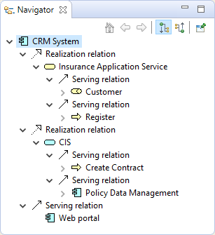
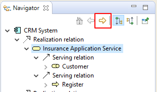
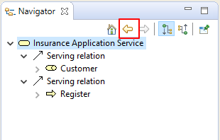
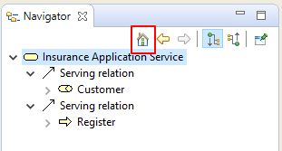
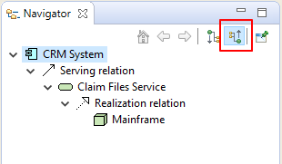
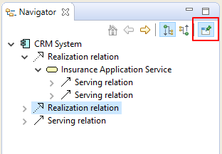

La fenêtre du navigateur affiche l'élément du modèle actuellement sélectionné ainsi que toutes ses relations avec d'autres éléments. Elle est utilisée pour afficher et permettre la navigation entre les éléments connectés via leurs relations et est utilisée conjointement avec la fenêtre de l'arborescence des modèles et les vues.
L'arborescence des modèles agit comme un dépôt "à plat" de tous les élements, des relations et des vues d'un modèle. Les vues sont les configurations graphiques de ces éléments, le navigateur est capable d'afficher toutes les relations d'un élément au niveau du modèle, peu importe qu'elles soient présentées dans une vue.
Pour utiliser la fenêtre du navigateur, choisissez n'importe quel élément ou relation dans l'arborescence des modèles ou dans une vue. L'arborescence du navigateur va se mettre à jour pour refléter la sélection actuelle. L'arborescence montre l'élément "racine" sélectionné et outes les relations qui y arrivent ou en partent ainsi que tous les éléments "cibles" de ces relations:
La fenêtre de navigation
Dans la capture d'écran précédente, l'utilisateur a sélectionné l'élément "Système CRM". Il y a trois relations de réalisation entre l'élément sélectionné et les trois éléments "Service de gestion clients", "Service de l'application d'assurance" et "CIS". A partir de ces trois éléments d'autres relations sont affichées entre eux et leurs éléments cibles.
Il est possible, cependant, de "plonger" dans l'arborescence du navigateur et de le parcourir d'élément en élément en le suivant ainsi que ses relations filles de la source vers la cible.
Un sous-élément sélectionné peut devenir l'élément "racine" soit en double-cliquant sur lui dans l'arborescence ou en cliquant sur le bouton "Aller dans" sur la barre d'outils de la fenêtre:
Le bouton "Aller dedans"
Inversement, en appuyant sur le bouton "Retour",, vous retournerez à l'élément précédemment sélectionné:
Le bouton "Retour"
Le bouton "Accueil" vous ramène à l'élément racine principal qui avait été sélectionné au départ:
Le bouton "Accueil"
Par défaut, le navigateur affiche les relations qui partent de la source vers l'élément cible. Il est possible d'inverser ceci pour afficher les relations de l'élément qui partent de la cible vers la source en cliquant sur le bouton "Afficher les relations des sources" sur la barre d'outils de la fenêtre:
Mode d'affiche des relations de la source
Dans la capture d'écran précédente, le "Système CRM" est la cible des deux relations "Utilisé par". Ainsi, le flux part de "Mainframe" vers "Service des dossiers de réclamation" et vers "Système CRM" et depuis "Serveur de fichier NAS" vers "Service des dossiers clients" et vers "Système CRM".
L'élément sélectionné peut être épinglé si nécessaire en cliquant sur le bouton épingler dans la fenêtre du navigateur:
Le bouton "épingler"
Il est également possible de glisser-déposer tous les éléments sélectionnés et/ou leurs relations depuis l'arborescence du navigateur vers une vue, exactement de la même façon que depuis l'arborescence des modèles vers une vue (voir Ajout d'éléments et de relations depuis l'arborescence des modèles vers une vue)